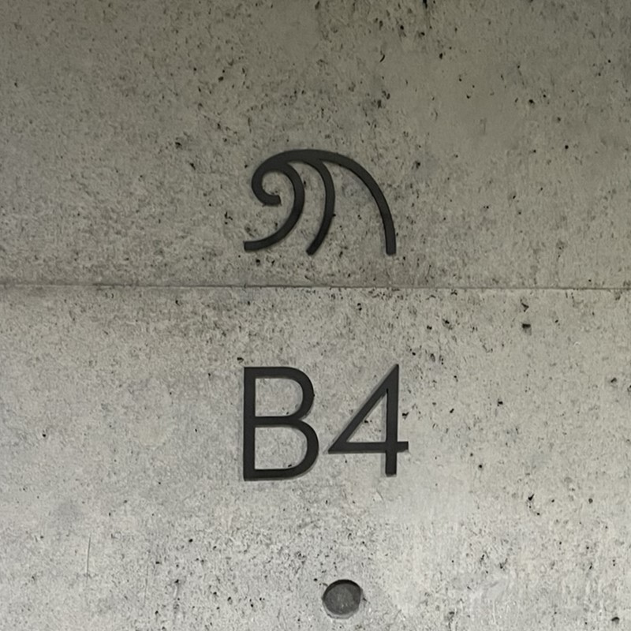
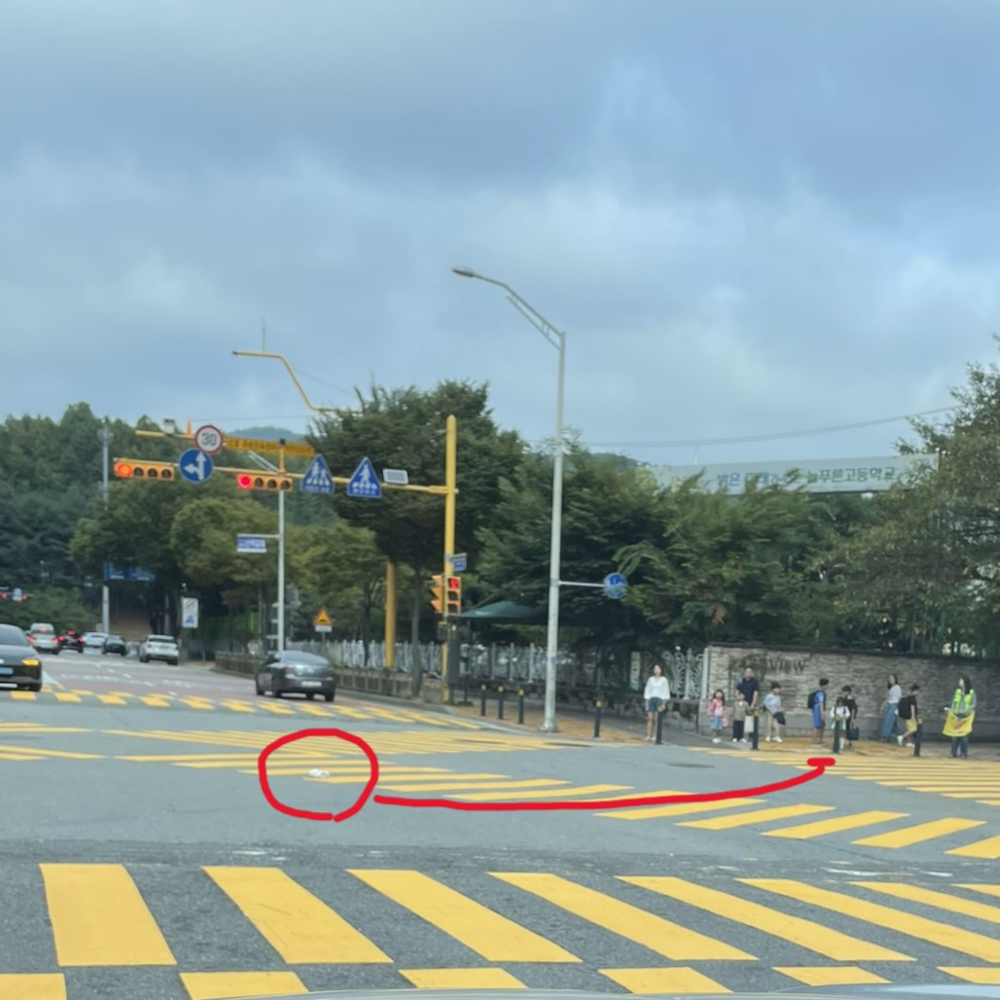
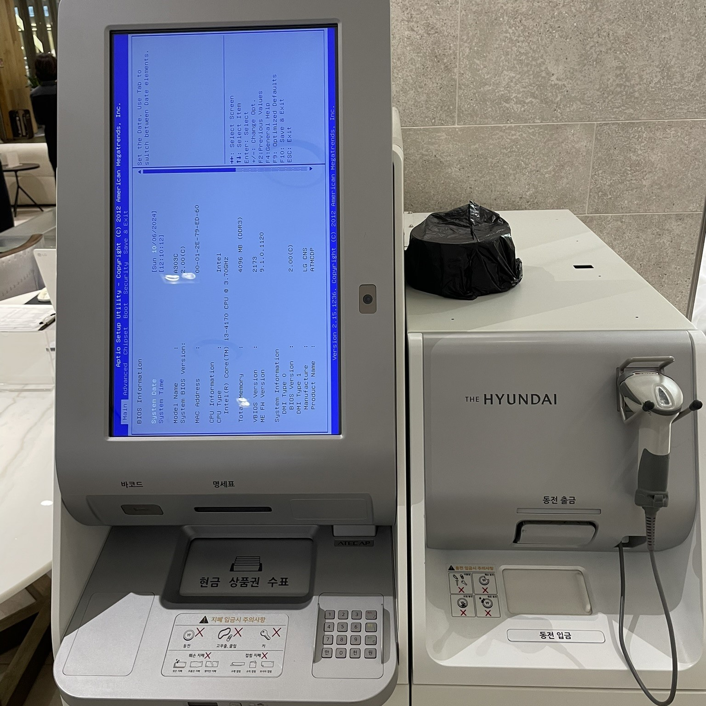

웃기는 혹은 이상한
2024.10.13
최근 이사를 갔다. 한 곳에 10년을 넘게 살면서 무심하게 흘리던 것들이 "헤어실 결심" 을 하고나니 또 새로운 모습으로 다가온다.
백 세 시대라 39세까지 청년이라고 한다. 대중 교통 이용하면 무제한 환급까지 해 준다니 더할나위 없다. 이렇게 좋은 공익 광고에 모델로 서는 것도 자랑스러운 일일 테다. 다만 특정 부위에 불이 들어온다는 것은 예상하지 못했을 것이다.

15년 전에 지어진 예전 사옥은 그 때만 해도 온갖 실험적인 시도가 있었다. 예를 들어 지하 주차장 각 층 마다 서로 다른 종류의 소리를 틀어놓는 것이다. 그래서 "아, 나 차 몇 층에 댔었지?" 라는 상황에서 "그래 차에서 내리고 나니 파도 소리가 들렸어. 그렇다면 지하 4층임에 틀림없지" 라는 상황을 기대했었다.
15년 전에 지어진 예전 사옥은 그 때만 해도 온갖 실험적인 시도가 있었다. 예를 들어 지하 주차장 각 층 마다 서로 다른 종류의 소리를 틀어놓는 것이다. 그래서 "아, 나 차 몇 층에 댔었지?" 라는 상황에서 "그래 차에서 내리고 나니 파도 소리가 들렸어. 그렇다면 지하 4층임에 틀림없지" 라는 상황을 기대했었다.
- 아 물론 매일 출근하는 - 그래서 기억에 남은 귀뚜라미 소리가 어제 들었던 건지 오늘 들었던 건지 확신이 없는 경우가 대부분이었다는 건만 제외하곤 꽤 그럴싸한 시도였다.
유리는 비틀림에 비교적 약한 물질이고 따라서 건물의 외벽에 붙인 유리 외장재는 표면이 반듯 반듯할 것으로 대충 생각하고 있었다.
그런데 왠걸, 저렇게 삐뚤빼뚤하게 보일 줄이야.

등교 시간이 다 되었는지 보행 신호가 떨어지자 부리나케 뛰어가는 남자애가 있었다. 하지만 학교를 코 앞에 두고 더 이상 움직이지 못했는데 그건.
네거리 한 가운데 차도에 하얀색 실내화를 남기고 왔기 때문이었다.
훗훗, 멍청이. 다음 신호 때 까지 꼼짝없이 기다리라구!
등교 시간이 다 되었는지 보행 신호가 떨어지자 부리나케 뛰어가는 남자애가 있었다. 하지만 학교를 코 앞에 두고 더 이상 움직이지 못했는데 그건.
네거리 한 가운데 차도에 하얀색 실내화를 남기고 왔기 때문이었다.
훗훗, 멍청이. 다음 신호 때 까지 꼼짝없이 기다리라구!
왠지 모를 위화감이 드는 현수막이다.
하늘거리는 코스모스 랑 우주 라는 코스모스는 좀 다른 것 아닌가?

님들아 껏다 켰는데 오류났어요. 하드웨어 중에 하나 폴트가 났나 봐요. 바이오스 세팅 화면에서 넘어가지 않아요.
님들아 껏다 켰는데 오류났어요. 하드웨어 중에 하나 폴트가 났나 봐요. 바이오스 세팅 화면에서 넘어가지 않아요.
- 세월이 참 많이 흘렀다는 것 - 이런 자동화 기기에 i3 를 쓰다니.
- 세월이 참 안 변한다는 것 - American Megatrends, Inc.